Home
Wyoming National Parks
Contact Us
Yellowstone National Park
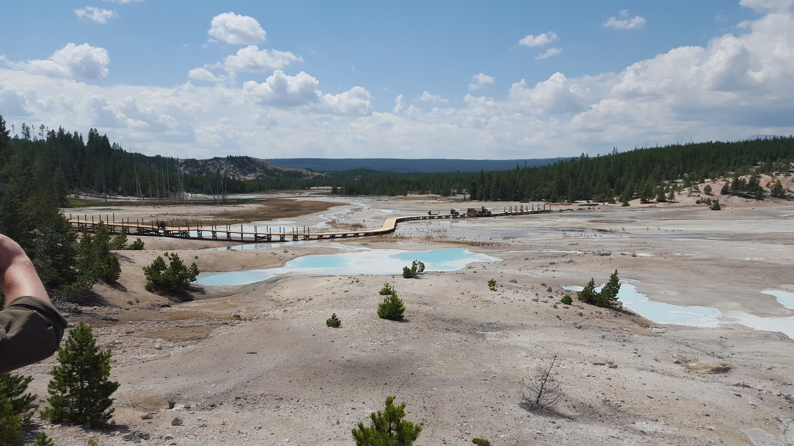
Norris Geyser Basin 2015
Information:
Locations: Wyoming, Montana and Idaho
Note: While three states are listed here about 96% of Yellowstone is in Wyoming
Date Established: March 1, 1872 by Ulyssses S. Grant
Area: 2,219,791 acres
Known For: The first national park established and its many geothermal features such as geysers
Visitors: 4,744,353
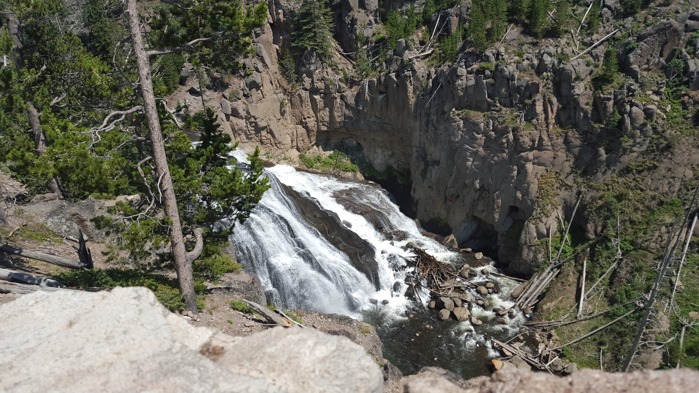
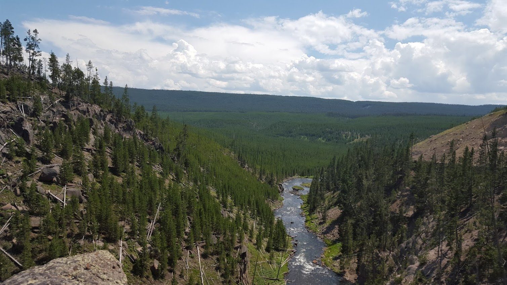
From Left to right: River near Calcite Springs, Gibbon Falls, Porcelian Basin and Gibbon River
Grand Teton
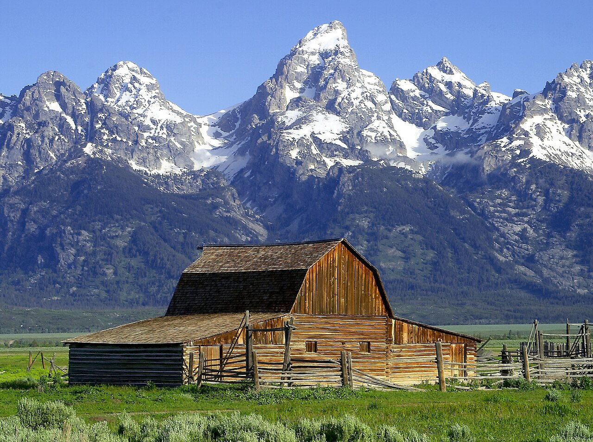
Grand Teton Mountains
Information:
Locations: Teton County, Wyoming
Date Established: February 26, 1929
Area: 310,000 acres
Known For: Dramatic, jagged moutain peaks and pristine lakes
Visitors: 2,806,223
 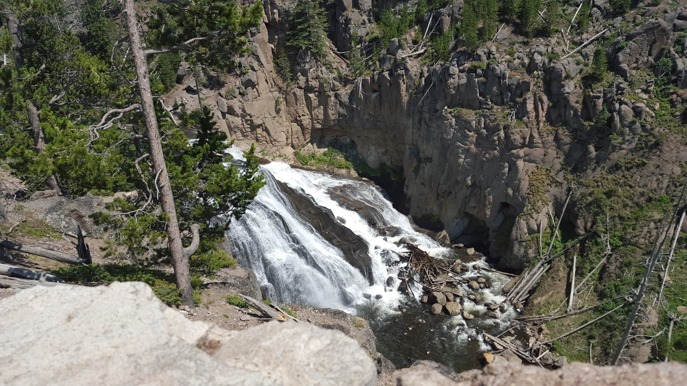
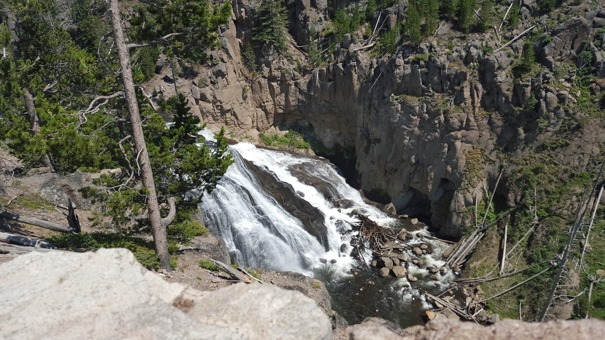
 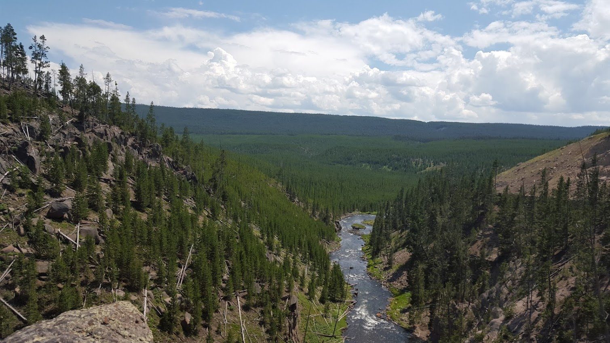
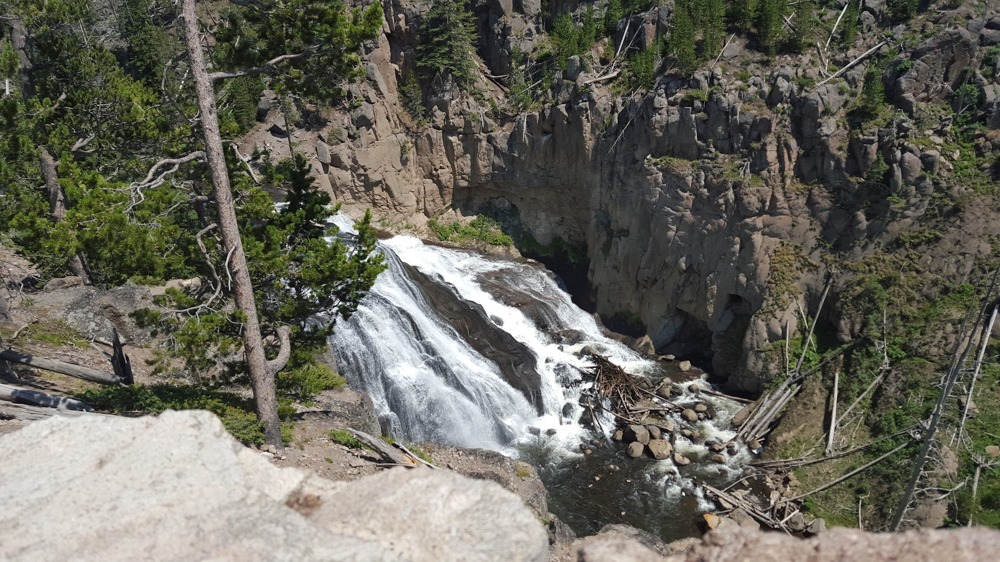
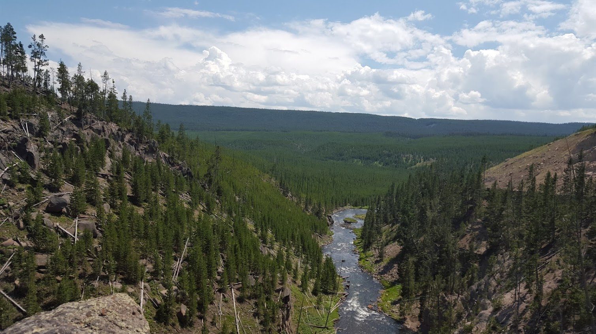
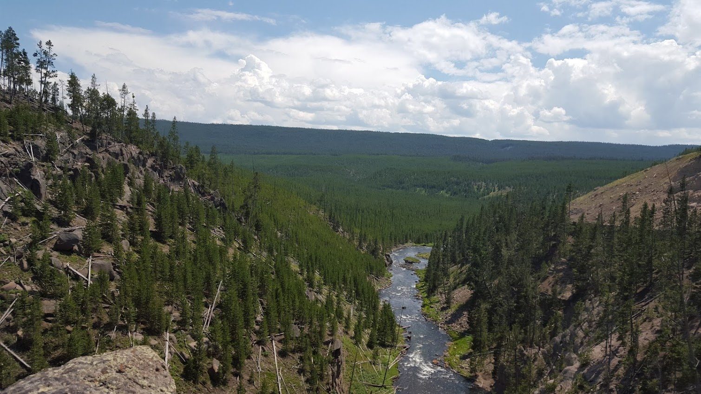
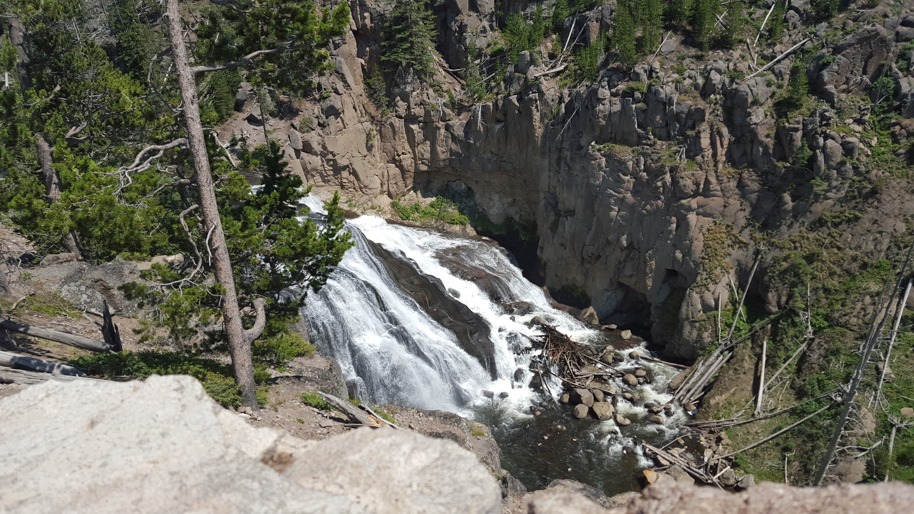
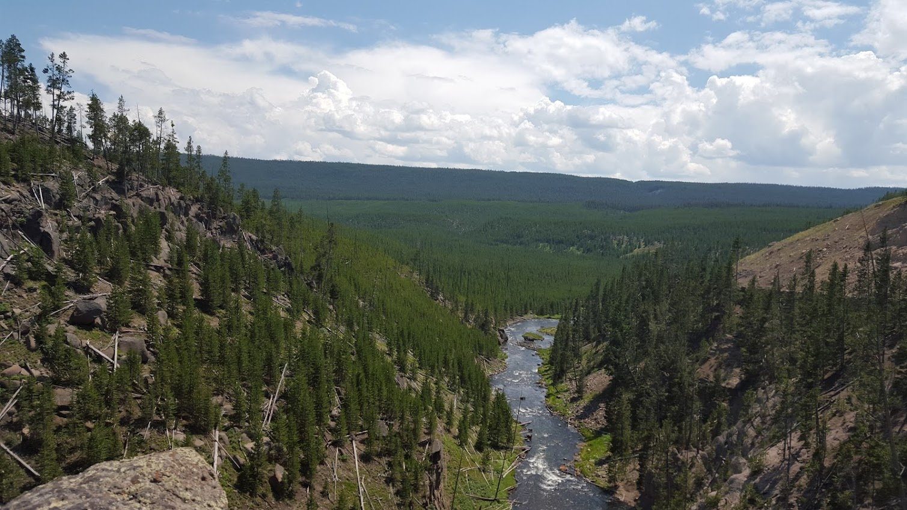